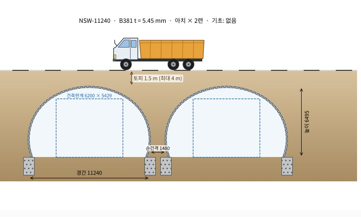
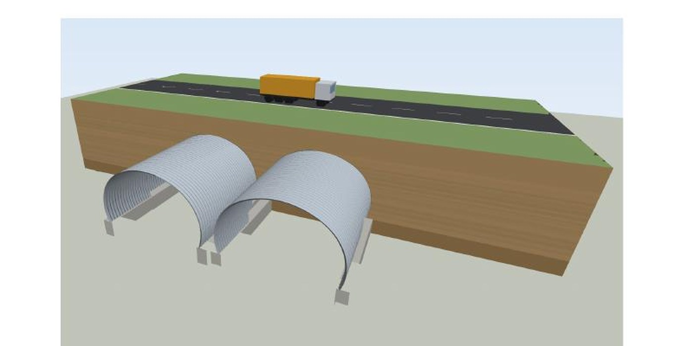
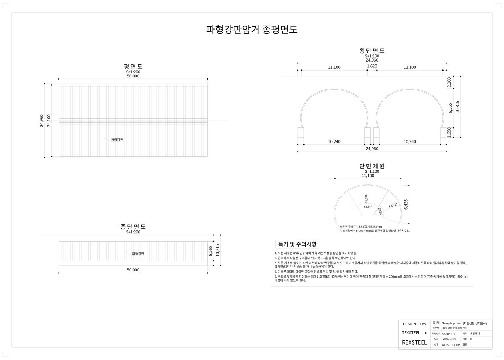
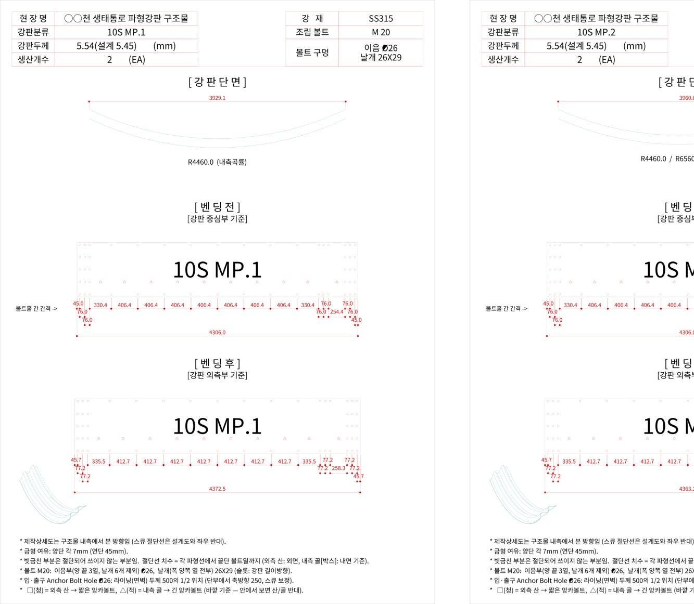
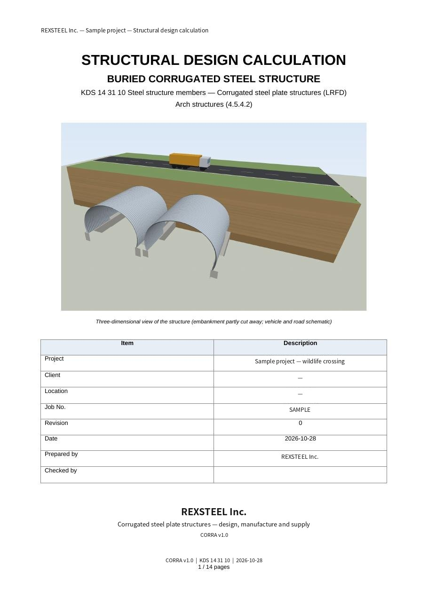

設計與工程Design and engineering설계와 엔지니어링
我們不只供應鋼材。每一個波形鋼板與波形鋼管案件，都由本公司以自行開發的設計系統完成結構計算、圖面與數量，交付業主與設計單位。We do not just supply steel. Every corrugated plate and pipe project is engineered in-house with our own design systems: structural calculations, drawings and quantities, delivered to the owner and the designer.강재만 공급하지 않습니다. 모든 파형강판·파형강관 프로젝트는 자체 개발 설계 시스템으로 구조계산, 도면, 수량까지 당사가 직접 완성해 발주처와 설계사에 제출합니다.
CORRA
CORRA 是 REXSTEEL 團隊以 30 年波形鋼板設計經驗自行開發的專用系統。輸入跨距、斷面、覆土、載重與地盤條件，即時顯示斷面、平面、板材配置與 3D 模型，並逐項檢核 OK / NG；按下執行，計算書、圖面與數量表同時產出。僅供合資公司內部使用，不對外販售。CORRA is REXSTEEL's proprietary system built on the team's 30 years of corrugated plate design. Enter span, profile, cover, loads and ground conditions and it shows the section, plan, plate layout and 3D model at once, checking every item OK / NG; one run produces the calculation report, drawings and quantities together. Used only within the joint venture, never sold.CORRA는 REXSTEEL이 30년 파형강판 설계 경험을 담아 자체 개발한 전용 시스템입니다. 경간·단면·토피·하중·지반 조건을 넣으면 단면, 평면, 판 배치, 3D 모델이 바로 표시되고 항목마다 OK/NG를 검토합니다. 실행 한 번으로 계산서·도면·수량표가 함께 나옵니다. 합작법인 내부에서만 쓰며 외부에 판매하지 않습니다.






多國規範Multiple codes다국 설계기준
AASHTO LRFD · CHBDC (CSA S6) · AS/NZS 2041 · KDS 14 31 10，含公路、鐵路與礦場車輛載重。AASHTO LRFD · CHBDC (CSA S6) · AS/NZS 2041 · KDS 14 31 10, with highway, railway and mine-vehicle loads.AASHTO LRFD · CHBDC(CSA S6) · AS/NZS 2041 · KDS 14 31 10, 도로·철도·광산차량 하중 포함.
拱形 · 箱型 · 彎管Arch, box, elbow아치 · 박스 · 엘보
各種拱形斷面、箱型涵洞（含補強肋）、平面彎折與斜交端部。All arch shapes, box culverts with stiffening ribs, plan elbows and skewed ends.각종 아치 단면, 보강 리브 박스 암거, 평면 꺾임과 사각 단부.
混凝土與基礎Concrete and foundations콘크리트·기초
基礎、端牆、翼牆設計與配筋；樁基礎含地質柱狀圖檢核。Footings, headwalls and wingwalls with reinforcement; pile foundations checked against borehole logs.기초·면벽·날개벽 설계와 배근, 주상도 기반 말뚝기초 검토.
自動設計Automatic design자동 설계
依淨空需求自動搜尋斷面、板厚與鋼種，列出候選方案。Searches profiles, thicknesses and steel grades for the required clearance and lists candidates.건축한계에 맞춰 단면·두께·강종을 자동 탐색해 후보안을 제시.
逐項即時檢核Item-by-item live check항목별 실시간 검토
管壁壓力、接縫強度、挫屈、最小覆土、施工階段等每一項顯示比值與 OK / NG。Wall thrust, seam strength, buckling, minimum cover and construction stages each show a ratio and OK / NG.관벽 압축, 이음 강도, 좌굴, 최소토피, 시공 단계 항목마다 비율과 OK/NG 표시.
一次執行，三種文件One run, three sets of documents한 번 실행, 세 가지 문서
所有文件以 REXSTEEL 技術文件格式輸出，可直接提交業主與設計單位。All documents follow the REXSTEEL technical format and can be submitted directly to owners and designers.모든 문서는 REXSTEEL 기술문서 양식으로 출력되어 발주처와 설계사에 바로 제출할 수 있습니다.
從輸入值直接生成 3D 模型A 3D model straight from the input values입력값에서 바로 3D 모델
所有尺寸皆取自設計輸入，無需另行建模。3D 模型用於計算書表頁、提案簡報與施工前審查，並規劃以 IFC 格式輸出，供業主 BIM 平台整合。公共工程要求 3D 模型送審時，可依需求配合。Every dimension comes from the design inputs, with no separate modelling. The 3D model is used for report covers, proposals and pre-construction review, and IFC export is planned for integration into owners' BIM platforms. Where public projects require 3D model submissions, we can support them.모든 치수를 설계 입력값에서 가져오므로 별도 모델링이 필요 없습니다. 3D 모델은 계산서 표지, 제안서, 시공 전 검토에 쓰이며, 발주처 BIM 플랫폼 연동을 위한 IFC 출력을 계획하고 있습니다. 공공공사에서 3D 모델 제출을 요구하면 대응할 수 있습니다.

REX-CSP
埋設式螺旋波形鋼管 (0RS · 1RS · 3RS) 之結構檢核程式。依 ASTM A796 · AASHTO 及台灣《公路橋梁設計規範》卡車載重、Cooper E80 鐵路載重計算，輸出可提交之 Word 計算書與管徑別適用範圍表。Checking program for buried helical pipe (0RS · 1RS · 3RS) to ASTM A796 / AASHTO with Taiwan highway design trucks and Cooper E80 rail loading, producing submittable Word reports and cover tables.매설 나선형 파형강관(0RS·1RS·3RS) 구조검토 프로그램. ASTM A796·AASHTO와 대만 도로교량설계규범 트럭하중, Cooper E80 철도하중으로 계산해 제출용 Word 계산서와 관경별 적용범위표를 출력합니다.
標準方法之外Beyond the standard method표준 설계법 그 너머
偏土壓、不均勻沉陷、大跨徑高填土、斜交過大或特殊載重時，以有限元素分析補強設計；機堡則以爆震模擬驗證。For eccentric pressure, uneven settlement, long spans with high fill, large skew or special loads, finite-element analysis supplements the design; shelters are verified by blast simulation.편토압, 부등침하, 장경간 고성토, 큰 사각, 특수하중에는 유한요소해석으로 설계를 보강하고, 격납고는 폭발 시뮬레이션으로 검증합니다.
MIDAS CIVIL · GTS NX · FEA NX
土壤–結構互制、施工階段與沉陷分析。Soil–structure interaction, construction stages and settlement.지반–구조물 상호작용, 시공단계, 침하 해석.
LS-DYNA
機堡襯板之爆震超壓與碎片攔截模擬（REXSTEEL 韓國團隊）。Blast overpressure and fragment-interception simulation for shelter liners (REXSTEEL Korea).격납고 라이너 폭발 과압·파편 차단 시뮬레이션 (REXSTEEL 한국 팀).
技師簽證Professional engineer기술사 날인
施工階段計算由韓國技師簽證；台灣送審文件由業主指定之登錄工程師簽證。Construction-stage calculations sealed by a Korean Professional Engineer; Taiwan submissions sealed by the owner's Engineer of Record.시공단계 계산서는 한국 기술사가 날인하고, 대만 제출 서류는 발주처가 지정한 책임기술자가 날인합니다.
從條件到交付From conditions to delivery조건 접수부터 납품까지
條件確認Conditions조건 확인
跨距 · 淨空 · 覆土 · 載重 · 地盤Span, clearance, cover, loads, ground경간·건축한계·토피·하중·지반
CORRA 設計CORRA designCORRA 설계
斷面選定與逐項檢核，必要時 FEMProfile selection and item checks, FEM where needed단면 선정과 항목 검토, 필요 시 FEM
文件交付Documents문서 제출
計算書 · 圖面 · 數量 · 3D，供送審Report, drawings, quantities and 3D for submission계산서·도면·수량·3D, 심사 제출용
製造Fabrication제작
依製作詳圖於 REXSTEEL 韓國工廠製造，出貨前檢驗Made to the fabrication details at REXSTEEL Korea, inspected before shipment제작상세도대로 REXSTEEL 한국 공장 제작, 출하 전 검사
施工支援Site support시공 지원
組裝說明、現場指導與變形量測Assembly instructions, site guidance and deformation monitoring조립 설명, 현장 지도, 변형 측정
把設計條件交給我們Send us your design conditions설계 조건을 보내 주세요
波形鋼板、波形鋼管或機堡案件，皆由本公司完成結構設計。Plate, pipe or shelter projects, all engineered by us.파형강판·파형강관·격납고 프로젝트 모두 당사가 구조설계를 맡습니다.